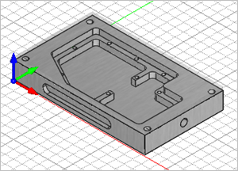
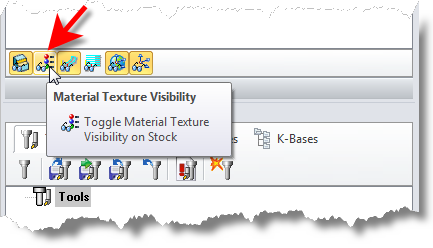

You can optionally assign a Material definition to your Stock. The Material definition is used for display purposes. It will also be automatically fed into the Feeds & Speeds Calculator when it is displayed.
1.Currently we have a part loaded and stock defined and toggled on.
|

2.Select the Program tab.
 MILL Module shown, Similar for MILL-TURN, TURN and Profile-NEST |
3. Select Material to display the dialog.
Select Material to display the dialog.
 Dialog Box: Select Stock Material |
4.Select a Material from the selection menu in the dialog. A preview of the Material texture will display in the dialog.
5.Materials are stored in a Material file. The default Material File is pre-selected from the menu.
6.The folder location where the Material File is located is indicated in the field at the bottom of the dialog. This location cannot be changed.
7.In the future you can add material definitions to the Material File or create your own material file.
8.Pick OK to close the dialog.
 |
9. To see your selected material display on the stock, select the Toggle Material Texture Visibility icon located at the bottom of the Machining Browser - second icon from the left.
To see your selected material display on the stock, select the Toggle Material Texture Visibility icon located at the bottom of the Machining Browser - second icon from the left.
 MILL Module shown, Similar for MILL-TURN, TURN and Profile-NEST |